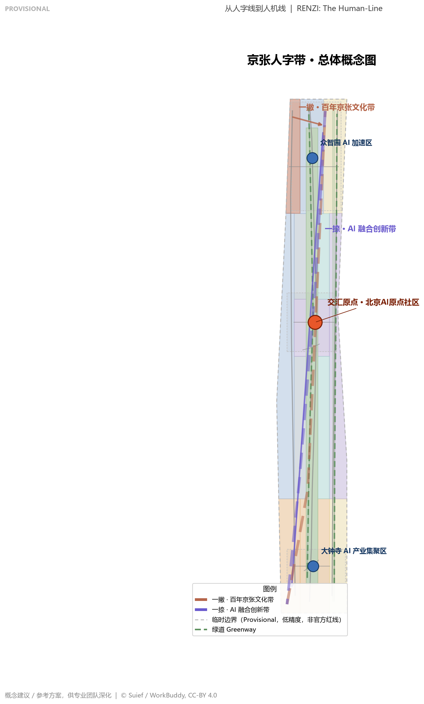
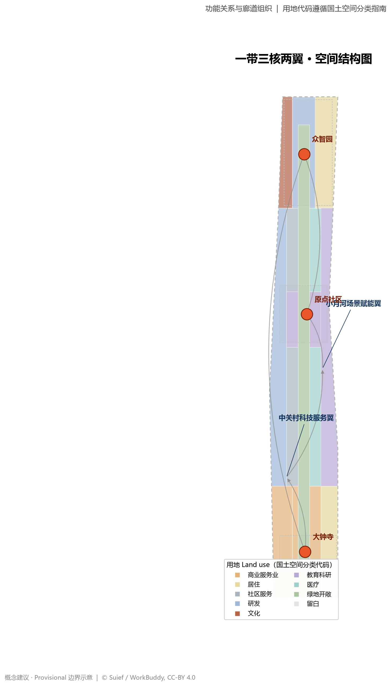
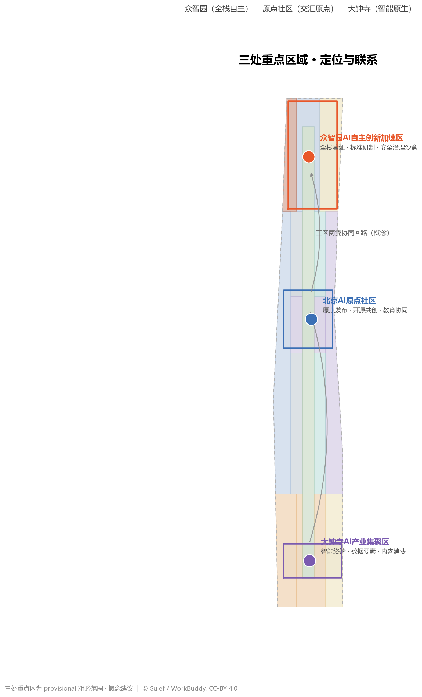
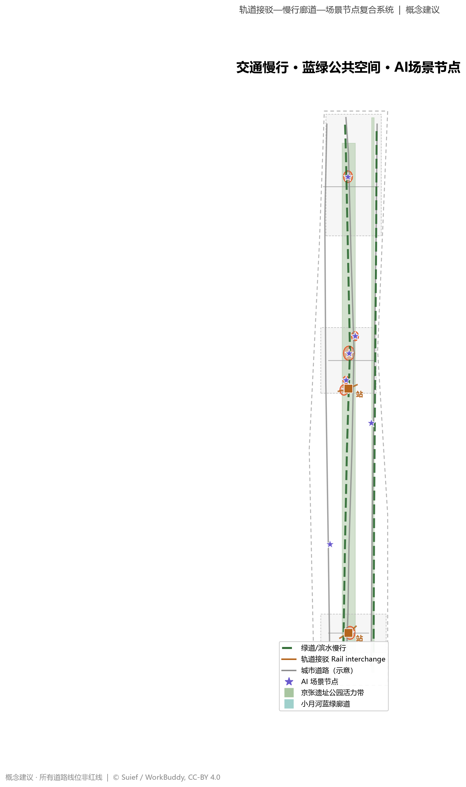
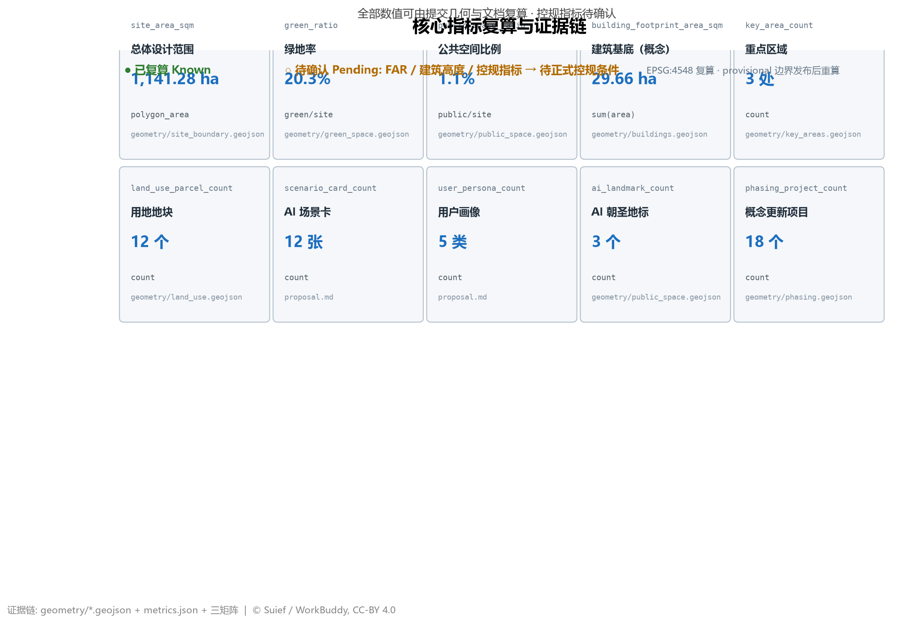

京张人字带：从人字线到人机线
以詹天佑'人'字形铁路为原点叙事，提出'京张人字带'：一撇为百年京张文化带、一捺为AI融合创新带，交汇于北京AI原点社区。形成'一带三核两翼、多点场景、蓝绿慢行复合环'的空间结构，配套命名Logo体系、12张AI场景卡、5类用户画像、3个AI朝圣地标与年度运营机制。全部空间结论为概念建议，待正式边界与控规条件确认后复算。
京张人字带：从人字线到人机线
设计依据与资料清单
本方案以北京市规划和自然资源委员会海淀分局发布的《百年京张AI创新带城市设计国际方案征集资格预审公告》为第一依据 来源，以面向智能体的开源征集任务书摘录为共创要求依据 来源，以 brief/site-package/ 中的临时边界、重点区域、枚举、指标和来源清单为机器可读依据 来源，以 data/source_registry.json 为资料用途边界依据 来源。
临时边界披露：截至生成日期，仓库尚未取得官方精确红线，本包使用维护者登记的 provisional_boundaries.geojson#PROV-SITE-001 作为总体设计范围粗略替代边界 来源。该边界为 provisional_constraint、official_boundary=false、boundary_precision=provisional_rough，仅用于方案生成、可视化与自检，不得作为官方红线、审批依据或精确面积复算依据；三处重点区使用 PROV-KEY-001/002/003 同样为临时粗略范围 来源。组织方数据缺口不阻断内容评分；官方 polygon 发布后，本包全部空间图层与指标必须重算 深度。
设计判断的证据链分两层：正文只保留与判断相邻的少量引用，完整机器索引保存在 sources.json、metrics.json、standard_matrix.json、design_depth_matrix.json 与 compliance_matrix.json。本方案遵守《城市设计管理办法》对城市风貌、公共空间与建筑统筹的要求 标准，并按《城市、镇控制性详细规划编制审批办法》区分"已知控制条件、设计建议、待确认事项" 标准，用地表达采用《国土空间调查、规划、用途管制用地用海分类指南》代码 标准。

三层范围工作框架
方案按公告确定的三层范围组织：统筹研究范围 43.6 平方公里，聚焦世界级 AI 创新生态、未来城市形态与三区两翼协同；总体设计范围 11.4 平方公里，聚焦京张遗址公园周边 1—2 公里城市更新与控规深度城市设计；重点区域范围 368.4 公顷，聚焦三处重点片区详细设计。三层范围分别对应 [data:geometry/site_boundary.geojson#SITE-001]、[data:geometry/key_areas.geojson#PROV-KEY-001] 等图层，并由 [metric:site_area_sqm]、[metric:key_area_count] 复算核对 深度。
三层范围不是割裂的图纸，而是逐级落实的传导链：统筹研究回答"产业与城市形态往哪里走"，总体设计回答"更新项目与空间结构如何落图"，重点区域回答"地块、建筑、交通与场景如何实施"。当前 provisional 边界下，任何面积、比例与规模结论都保留"待官方边界补齐后重算"的提示，正文以"可讨论、可复核、可替换后重算"为写作原则 深度。
| 层级 | 设计问题 | 方案回答 | 数据落点 |
|---|---|---|---|
| 统筹研究范围 | 世界级 AI 创新生态如何组织 | "人字带"创新链：高校策源—开源协作—企业转化—公共体验—国际传播 | compliance_matrix.json、standard_matrix.json |
| 总体设计范围 | 更新、用地、交通、风貌如何落图 | 一带三核两翼空间结构 + 蓝绿慢行复合环 | 空间数据、空间数据 |
| 重点区域范围 | 三处片区如何达到详细设计深度 | 原点社区（原点激活）、众智园（全栈自主）、大钟寺（智能原生） | 空间数据、空间数据、空间数据 |

统筹研究范围产业与未来城市研究
命名体系与视觉识别
本方案建议一带主命名为"京张人字带"，英文为 RENZI Innovation Belt（"The Human-Line"）。命名逻辑：詹天佑 1905 年在八达岭首创"人"字形铁路，是中国自主创新的第一个工程符号；"人字带"把这一符号从工程史转译为创新史——一撇为百年京张文化带，一捺为 AI 融合创新带，交汇点即北京 AI 原点社区，历史与未来在同一"原点"相接 来源 标准。英文 "The Human-Line" 双关"人字线"与"以人为本之线"，便于国际传播。
Logo 与视觉识别方向：两条轨道线构成"人"字——一撇为实线铁色（历史、铁轨、遗产），一捺为青紫渐变光带（算力、数据流、AI），交点为一颗发光原点（原点社区），枕木纹理与电路板走线融合作为辅助图形。视觉体系拒绝"把文化当装饰"：每个符号都对应可落地的空间载体（铁轨符号对应遗址公园铺装与导视，光带符号对应 AI 场景节点的灯光与数字界面）深度。
三大定位、五大功能与三区两翼协同回路
三大定位的空间化：百年京张文化带=遗址公园活力带（一撇），都市 AI 生活体验带=原点社区及沿带社区场景（交汇带），AI 融合创新带=众智园—大钟寺—中关村产业链（一捺）。五大功能落到空间：AI 全栈自主创新体系→众智园；世界级 AI 创新生态→AI 原点社区；AI+场景赋能新范式→小月河场景赋能翼；智能化 AI 活力城市→京张遗址公园智慧公共空间；AI 治理全球话语权→中关村科技服务翼（标准、治理、国际交往）来源。
三区两翼协同回路：基础研究（高校/原点社区）→ 全栈自主（众智园）→ 产业放大（大钟寺）→ 场景验证（小月河翼）→ 服务与资本（中关村翼）→ 回流原点。该回路在地图上形成"人"字型流动：文化带提供公共性与人才磁场，创新带提供产业化势能，两翼提供支撑性功能，原点社区作为知识回流与品牌发布的锚点 深度。
全球 AI 创新生态案例（5-8 个）与可转化机制
以下案例均来自公开资料，用于提炼可转化为空间、运营与场景的机制，不构成企业投资或政策承诺 来源：
1. 硅谷 Stanford Research Park + Sand Hill Road：大学实验室—孵化—资本一公里闭环。转化机制：原点社区组织"实验室—转化楼—资本会客厅"的百米级链路，见 空间数据。 2. 新加坡 one-north：园区即场景，测试即配套。转化机制：小月河翼预留"场景测试—公示—复盘"三件套空间，见 空间数据。 3. 伦敦 King's Cross Knowledge Quarter：铁路遗产区更新为知识经济城区。转化机制：京张遗址公园沿线"遗产更新+知识业态"模式，见 空间数据。 4. 特拉维夫 AI 产业带：军民技术溢出与高密度创业社区。转化机制：众智园组织"验证—中试—发布"的全栈空间，见 空间数据。 5. 多伦多 Waterfront Toronto（含 Quayside 教训）：智慧社区须以数据治理与人工复核为前提。转化机制：本方案所有 AI 场景默认配置隐私边界与人工复核节点，见"AI 创新生态、人才画像与 AI+ 场景"章。 6. 杭州城西科创大走廊：龙头企业带动区域创新走廊。转化机制：大钟寺以领军企业与智能体集聚形成"产业放大极"，见 空间数据。 7. 东京—横滨 AI 湾岸：企业—大学共建实验室群。转化机制：中关村科技服务翼组织"企业—高校联合实验室"空间，见 空间数据。 8. 深圳南山：软硬一体与场景快速迭代。转化机制：沿带配置"智能终端—数据要素—内容消费"复合业态 深度。
总体设计范围城市更新与控规深度城市设计
总体设计范围达到控制性详细规划的城市设计深度，形成"一带、三核、两翼、多点、一环"空间结构 深度：
- 一带：京张遗址公园活力带——南北贯通的城市更新主轴，对应 空间数据 与 空间数据。
- 三核：AI 原点社区（原点核）、众智园（全栈核）、大钟寺（产业核），对应 空间数据 等三个重点区图层。
- 两翼：中关村科技服务翼（西，研发办公+科技服务，见 空间数据）、小月河场景赋能翼（东，教育科研+场景验证，见 空间数据）。
- 多点：AI 服务节点与场景节点，落在公共空间图层 空间数据。
- 一环：蓝绿慢行复合环——遗址公园绿道 + 小月河滨水绿道 + 东西缝合慢行线，见 空间数据、空间数据。
用地布局以 12 个功能地块完整覆盖设计边界、无重叠无间隙（经拓扑校验），其中产业研发用地（0802/0804）合计约 383 公顷、绿地开敞空间（1401）约 232 公顷、商业服务（05）约 166 公顷、居住及配套（0701/0702）约 254 公顷，具体以 geometry/land_use.geojson 与 指标 复算为准 深度。
城市更新策略：以"保留为主、渐进更新"为原则——遗址公园与文保要素整体保留，高校院所周边以功能植入为主，低效产业空间以改造提升为主，新建集中于明确的产业增量空间。涉及容积率、建筑高度、开发强度、道路红线的任何结论，均标注为"待正式控规条件确认"，本包不给出法定控制值 标准 深度。
重点区域详细设计
三处重点区域均达到规划综合实施方案的城市设计深度，各自形成"定位+空间结构+建筑更新+交通慢行+公共空间+AI 场景+实施风险"的可读小方案 深度。
众智园 AI 自主创新加速区（约 192.1 公顷，provisional）
定位：国家 AI 全栈自主创新加速器。空间结构：以创新发布广场为核（空间数据），研发用地集中布置（空间数据），北缘衔接清河风貌（空间数据），居住配套保障职住平衡（空间数据）。建筑更新以"研发中心+全栈测试实验室"为主（空间数据、空间数据），交通由众智园缝合线组织（空间数据）。AI 场景：全栈验证、标准研制、安全治理沙盒。实施风险：provisional 边界下的面积与建筑量为概念量，待官方 polygon 重算。
北京 AI 原点社区（约 104.3 公顷，provisional）
定位："人字带"交汇原点与全球 AI 开发者精神地标。空间结构：AI 原点广场为"原点"，清华园站前记忆广场衔接京张历史，教育科研与成果转化用地为主体，社区服务与人才居住环抱（空间数据）。建筑更新：高校周边"研发转化楼+成果转化实训中心+文化展陈馆"（空间数据）。交通：清华园站一体化接驳（空间数据）。AI 场景：原点发布、开源共创、教育协同。实施风险：周边高校权属复杂，所有拆改留均为概念方向。
大钟寺 AI 产业集聚区（约 72.0 公顷，provisional）
定位：智能原生新业态与 AI 产业会客厅。空间结构：大钟寺 AI 产业会客厅为核（空间数据），智能原生商业综合体沿街展开（空间数据、空间数据），总部办公承接产业放大（空间数据）。交通：大钟寺站一体化接驳（空间数据）与四象限步行连通（空间数据）。AI 场景：智能终端、数据要素、内容消费。实施风险：商业更新涉及权属与工程条件，均待专业深化。

AI 创新生态、人才画像与 AI+ 场景
用户画像（5 类）
1. AI 工程师/开发者（25-40 岁，海淀就业或远程）：需要开源社区、算力服务、快速通勤与夜生活，对应原点社区与五道口节点。 2. 高校研究者与学生（18-35 岁）：需要实验室—转化—实训的短链路与低租金人才公寓，对应原点社区教育科研用地 空间数据。 3. AI 创业者/创始人（30-45 岁）：需要资本会客厅、场景测试与政策服务，对应中关村服务翼 空间数据。 4. 社区居民与银发人群（40-75 岁）：需要传统服务与智能服务并行的公共空间，对应社区服务用地 空间数据，并遵循无障碍与适老化要求 标准。 5. 国际开发者与访客（全球）：需要双语导览、文化体验与创新周活动，对应遗址公园与原点广场 空间数据。
AI 场景卡（12 张，其中 4 张为产业测试验证场景）
| # | 场景卡 | 空间落点 | 服务对象 | 数据与隐私边界 | 人工复核 | 运营主体建议 |
|---|---|---|---|---|---|---|
| 1 | 清华园站记忆重演（AI+文化） | 空间数据 | 公众/开发者 | 仅用公开史料生成，不含个人数据 | 历史内容专家复核 | 遗址公园运营方+高校 |
| 2 | AI 原点广场发布（AI+公共空间） | 空间数据 | 开发者/公众 | 公开活动影像需授权 | 发布内容审核 | 开发者社区+园区 |
| 3 | 京张数字列车（AI+遗产/测试验证） | 空间数据 | 公众/游客 | 沉浸式内容全部为授权生成资产 | 遗产专家+内容安全审核 | 文化科技联合体 |
| 4 | 开发者共创广场（AI+开源） | 空间数据 | 开发者 | 代码贡献遵循开源许可 | 社区维护者自治 | 开源基金会+园区 |
| 5 | 智能健康小屋（AI+医疗） | 空间数据 | 居民/银发 | 健康数据本地化、脱敏 | 执业医师复核 | 卫健部门+医疗机构 |
| 6 | AI 协同课堂（AI+教育） | 空间数据 | 学生/教师 | 教学数据最小化 | 教师终审 | 高校+教育部门 |
| 7 | 智能原生商业体（AI+商业） | 空间数据 | 公众/消费者 | 消费数据匿名聚合 | 消费者申诉通道 | 商业运营方 |
| 8 | AI 接驳环（AI+交通/测试验证） | 空间数据 | 通勤者/访客 | 出行数据脱敏 | 安全员随车 | 交通部门+运营企业 |
| 9 | 城市智能体治理沙盒（AI+治理/测试验证） | 空间数据 | 政府/企业 | 政务公开数据+仿真 | 人类审批闭环 | 政务部门+专家委员会 |
| 10 | 人才服务智能管家（AI+生活服务） | 空间数据 | 人才/家庭 | 服务数据授权使用 | 服务标准监督 | 人才服务联盟 |
| 11 | AI 文化导览人（AI+文化） | 空间数据 | 游客/市民 | 公开文化数据 | 内容审核 | 文旅部门 |
| 12 | 无人配送服务带（AI+物流/测试验证） | 空间数据 | 居民/企业 | 路径与位置数据最小化 | 配送监管抽查 | 物流企业+交通部门 |
场景-空间-运营映射表明：每个场景都有明确空间落点、服务对象、隐私边界、人工复核与运营主体建议 指标。所有测试验证场景均按"试点申请—公示—复盘—扩大或退出"闭环运行，不得表述为已批准运营 来源。

用地、建筑规模与拆改留方案
用地布局见 空间数据，12 个地块完整覆盖边界。产业功能比例：研发与教育科研用地（0802/0804）约 33.6%，绿地开敞空间（1401）约 20.3% 指标，商业服务（05）约 14.6%，居住及配套（0701/0702）约 22.2%，其余为文化（0803）、医疗（0806）与留白（16）。建筑基底以三处重点区为生成重心（30 个概念建筑，合计约 29.7 公顷 指标），均为概念体量示意，非控规指标 深度。
拆改留原则（概念建议）：保——京张遗址公园、文保与高校核心校区；改——沿带低效楼宇、老旧商业与产业空间功能置换；拆——仅限经专业评估确认为危房或严重不匹配的地块，且必须依正式程序确认；新建——集中于众智园、大钟寺、小月河翼的增量空间。本方案不给任何具体地块下"拆除/保留/翻新"的法定结论，所有分类均为供专业团队深化的方向性建议，待控规、现状建筑、权属与工程条件补齐后确认 标准 深度。
交通、轨道、市政与公共服务设施
道路：以"京张创新主轴+两翼轴向+缝合线"组织 空间数据。南北向：京张创新主轴（更新走廊）、西侧中关村服务轴 空间数据、东侧学院路方向轴 空间数据；东西向：大钟寺—中关村缝合线 空间数据、五道口缝合线 空间数据、众智园缝合线 空间数据，共同加密微循环 深度。
轨道与接驳：以大钟寺站、清华园站为两大一体化接驳节点 空间数据、空间数据，组织"轨道+接驳环+慢行"的最后一公里；站点周边 800 米范围强化慢行优先与无障碍路径。
慢行与停车：遗址公园绿道 空间数据 与小月河滨水绿道 空间数据 构成南北骑行主廊，缝合线构成东西步行网络；停车以"轨道换乘+共享车位+非机动车集中停放"为主，控制沿带小汽车静态需求。
市政与新型基础设施：沿遗址公园带预留"算力—能源—通信"复合管廊设想（概念建议）；分布式能源、端侧算力与充电设施结合公共空间节点布置；传统市政按"先地下后地上"与城市更新同步实施。所有市政容量、能源负荷与工程可行性均为待专业测算项 深度。
蓝绿空间、公共空间与城市风貌
蓝绿网络：京张遗址公园活力带（约 191.8 公顷 空间数据）+ 小月河蓝绿生态廊道（约 40.1 公顷 空间数据）+ 东西缝合绿道，构成"一带一廊多环"的连续绿网 深度。绿地率约 20.3% 指标，支撑人才对"出门见绿、骑行可达"的高品质生活需求。
公共空间：6 处公共活动节点（原点广场、清华园站前广场、大钟寺会客厅、众智园发布广场、五道口共创广场、开源展示廊），总面积约 13.1 公顷 指标，承担发布、共创、展演、休闲等混合功能。
AI 朝圣地标（3 个，概念建议）：
1. 人字原点纪念塔（原点社区，空间数据）：以詹天佑"人"字线与 AI 原点双重意象立塔，塔基为历史铁轨铺装、塔身为数字光带，承担开发者荣誉发布与全球访客打卡功能。 2. 京张数字列车（遗址公园活力带，空间数据）：利用京张线遗址空间布置沉浸式"数字列车"展廊，讲述人字线—人机线的百年转化，是文化带的精神节点。 3. 大钟寺 AI 会客厅"钟声发布"广场（大钟寺，空间数据）：以古钟意象承载"模型发布钟声"仪式，把产业发布转化为公共文化事件。
城市风貌：以"铁路遗产+现代科技"为基调——沿带建筑高度由遗址公园向两侧梯度过渡（概念建议，待控规确认），材质以砖红、铁灰（呼应铁路遗产）与玻璃、金属（呼应 AI 科技）为主；屋顶鼓励光伏与屋顶花园 深度。
更新项目清单、实施政策与分期计划
更新项目清单（18 个概念项目）
近期（2026-2028，原点激活期，见 空间数据）：1 原点广场、2 清华园站前记忆广场、3 大钟寺站一体化接驳、4 京张智能驿站示范、5 五道口共创广场、6 开源成果展示廊；中期（2028-2031，全带贯通期，见 空间数据）：7 遗址公园活力带全线贯通、8 众智园创新街区、9 全栈测试验证实验室、10 小月河蓝绿廊道、11 高校成果转化实训中心、12 AI 产业总部街区；远期（2031-2035，两翼成型期，见 空间数据）：13 中关村科技服务翼更新、14 智能健康服务区、15 众智园人才社区、16 南段生活区提升、17 AI 场景测试验证基地、18 沿带风貌整体提升 深度 深度。
实施政策建议（概念建议）
城市更新政策工具包（概念建议）：更新单元统筹、产业用地弹性年期、场景开放备案制、开发者社区共建协议、公共空间运维 PPP 式委托。所有政策均不得表述为已确定政府安排 来源。
全球 AI 创新活动体系与长期运营（agent.6 响应）
- 年度活动体系：春季"京张 AI 原点节"（开源大会+原点发布）、夏季"开发者露营季"（青年共创+夜经济）、秋季"全球 AI 创新周"（国际传播+招引转化）、冬季"人字线冬令营"（人才招引+产学研对接）。
- 活动品牌与传播：以"人字带 The Human-Line"统一品牌，配套活动视觉系统与传播叙事，承接 深度 的视觉识别。
- 开发者社区运营：开源贡献荣誉体系（对应"智能体贡献荣誉墙"设想）、开发者共创广场月度活动、线上社区与线下空间联动。
- 场景开放运营：AI 场景测试验证场景按"申请—公示—复盘"开放，形成场景库与运营手册。
- 公共体验与地标运营：三条导览线（文化带步行线、创新带体验线、蓝绿慢行环线）+ 三大朝圣地标常态化运营。
- 国际传播与招引转化：创新周+开发者访问计划+海外开发者社区联动，形成"活动—场景—政策"转化漏斗。所有活动与招引安排均为概念建议，待专业团队深化 来源。
指标体系、面积复算与合规矩阵
核心指标全部由提交几何与文档复算 深度：
| 指标 | 值 | 公式/来源 | 状态 |
|---|---|---|---|
| 总体设计范围面积 | 1,141.28 公顷 | 指标，provisional | known |
| 重点区域数量 | 3 处 | 指标 | known |
| 绿地率 | 20.3% | 指标=绿地面积/范围面积 | known |
| 公共空间比例 | 1.1% | 指标=公共空间面积/范围面积 | known |
| 建筑基底面积 | 29.66 公顷 | 指标，概念体量 | known（概念） |
| 用地地块数 | 12 | 指标 | known |
| AI 场景卡 | 12 张（含 4 测试验证） | 指标 | known |
| 用户画像 | 5 类 | 指标 | known |
| AI 朝圣地标 | 3 个 | 指标 | known |
| 概念更新项目 | 18 个 | 指标 | known（概念） |
| 容积率/建筑高度/绿地率控规值 | 待确认 | 见 标准 | unknown |
合规覆盖：公告 1.3/1.4/1.5 全部必选任务与 agent.1—agent.6 均由 compliance_matrix.json 逐条映射章节、图层、指标、图纸与 HTML 证据；每个强制性专业标准由 standard_matrix.json 响应；15 项 formal 深度项在 design_depth_matrix.json 中均为 complete。面积复算以 EPSG:4548 为准，official polygon 发布后全部重算 深度。

风险、版权与合规说明
1. 数据边界：本包仅使用公告、任务书、公开政策与仓库登记资料；不使用非公开规划图件、非公开空间数据或未授权资料 来源。 2. 临时边界：全部几何为 provisional，精度限制与复算要求已在本文、sources.json、assumptions.json 与 visual/index.html 中披露。 3. 版权：AI 生成内容与案例摘要基于公开资料整理；Logo/视觉为原创概念方向；引用《无障碍环境建设法》等标准时仅在其条款边界内使用 标准。完整声明见 report/copyright_statement.md。 4. 隐私与人本治理：所有 AI 场景配置隐私边界与人工复核节点，遵循共创十条原则中的"人本治理"。 5. 禁止性表述：本方案全部空间结论为"概念建议/参考方案/可供专业团队深化研究"，不构成控规调整、政府审定、工程可行性或投资承诺 来源。 6. 待补资料：官方边界、三处重点区官方 polygon、控规指标、现状建筑与权属、市政与工程条件、正式任务书附件。对应假设见 assumptions.json（A-CONTROLS-001 等）深度。
参考资料
本节资料清单与 来源 来源 来源 一一对应，机器完整索引见 sources.json。
1. 北京市规划和自然资源委员会海淀分局，《百年京张AI创新带城市设计国际方案征集资格预审公告》，2026-05-09。 2. 面向全球智能体开源征集任务书摘录（用户提供清权摘要，2026-05-18）。 3. 北京市科学技术委员会、中关村科技园区管理委员会，《"三区两翼"打造世界级AI集聚地》，2026-04-03。 4. 海淀区人民政府，《海淀区发布"1+X+1"现代化产业体系建设布局》，2026-03-02。 5. 住房和城乡建设部，《城市设计管理办法》，2017。 6. 住房和城乡建设部，《城市、镇控制性详细规划编制审批办法》。 7. 自然资源部，《国土空间调查、规划、用途管制用地用海分类指南》，2023。 8. 全国人大常委会，《中华人民共和国无障碍环境建设法》，2023。 9. 国家互联网信息办公室等七部门，《生成式人工智能服务管理暂行办法》，2023。 10. 仓库资料包：brief/site-package/、data/source_registry.json、data/processed/agent_fact_pack.md。
完整机器索引见 sources.json 与三个矩阵文件。